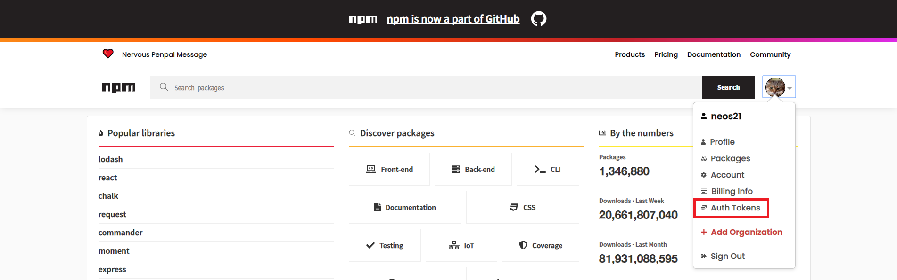
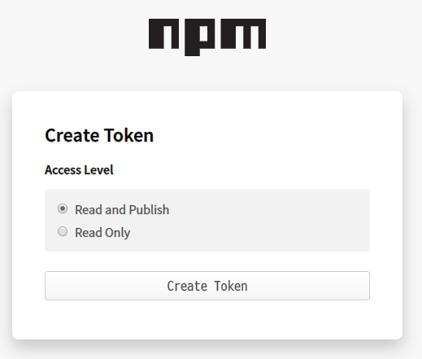
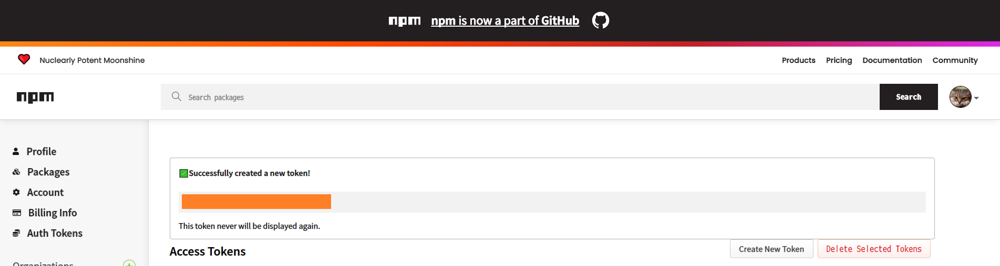

npm publish を自動で行う GitHub Actions の作り方
npm publish を自動で行う GitHub Actions を作ったので、その作り方を紹介する。
目次
npm のトークンを取得する
GitHub Actions から npm publish を行うため、まずは npm のトークンを発行しておく。
npmjs.com にログインしたら、右上のユーザアイコンから「Auth Tokens」を選ぶ。

「Access Tokens」ページに移動したら「Create New Token」ボタンを押下する。

「Create Token」ページでは「Read and Publish」の Access Level を選択し、「Create Token」ボタンを押下する。

すると「Successfully created a new token!」というメッセージとともに、npm トークンが表示される。このトークン文字列は二度と再表示ができないので、ココで間違いなくコピーして控えておく。

GitHub の Secrets に npm トークンを登録する
npm トークンを取得したら、それを GitHub リポジトリの Secrets として保存する。
GitHub のリポジトリページを開き、「Settings」ページに移動する。「Settings」ページの左メニューから「Secrets」を選択し、「New secret」ボタンを押下する。
「New secret」ページにて、次のように登録する。
- Name：
NODE_AUTH_TOKENとする - Value：先程コピーした npm トークン文字列 (前後に空白や改行を含まないよう、1行とする)
「Add secret」ボタンを押下したら Secret が登録できる。
npm publish する GitHub Actions Workflow
Secret の用意ができたら、いよいよ Workflow の作成に移る。おおよそ以下のように書けば良い。
.github/workflows/publish-to-npm.yaml
name: Publish To npm
on:
push:
branches:
- master
workflow_dispatch:
jobs:
publish-to-npm:
runs-on: ubuntu-latest
steps:
- name: Checkout
uses: actions/checkout@v1
- name: Use Node.js And Setup .npmrc
uses: actions/setup-node@v1
with:
node-version: '12.x'
registry-url: 'https://registry.npmjs.org'
# ↓ package.json の name に含めたスコープを指定しておく
scope : '@neos21'
always-auth : true
env :
NODE_AUTH_TOKEN: ${{ secrets.NODE_AUTH_TOKEN }}
- name: Can Publish
run : npx can-npm-publish --verbose
env :
NODE_AUTH_TOKEN: ${{ secrets.NODE_AUTH_TOKEN }}
- name: Install
run : npm install
env :
NODE_AUTH_TOKEN: ${{ secrets.NODE_AUTH_TOKEN }}
- name: Build
run : npm run build --if-present
env :
NODE_AUTH_TOKEN: ${{ secrets.NODE_AUTH_TOKEN }}
- name: Publish
run : npm publish --access=public
env :
NODE_AUTH_TOKEN: ${{ secrets.NODE_AUTH_TOKEN }}
masterブランチへの Push をトリガーに動作するようにしたcan-npm-publishを使い、当該バージョンが公開済かどうかチェックしているので、package.json内のバージョン番号を書き換えていない場合はnpm install以降の Step が動作しないことになる
actions/setup-node内のscopeは自身の Owner 名に合わせて変更する- Secrets に登録した
NODE_AUTH_TOKENを環境変数で渡し、npmjs のレジストリで認証できるようにしている npm install・npm run build・npm publishなどは通常手作業で Publish する時と同じnpm installは依存パッケージがなかったら何の影響もしない。この Workflow をそのまま汎用的に流用できるだろう--if-presentオプションにより、npm run buildが存在しなくてもエラーにならない。コレにより、この Workflow を汎用的に流用できるだろう--access=publicオプションは、スコープパッケージをnpm publishする場合は必須
前回紹介した GPR (GitHub Package Registry) への Publish を同時に行う場合は、一つの Workflow ファイルに2つの Job として記載しても良いし、二つの Workflow ファイルに分けていても良い。
1 Workflow・2 Jobs で記述した場合、片方の Job が失敗してももう片方の Job はそれに引きずられて中断されることはなく、ちゃんと最後まで終わるようだ。
2 Workflows で記述した場合は完全に別々に動くので気にすることなし。「Actions」タブでの表示も「npm 公開用」と「GPR 公開用」とで Workflow が別れて表示されるので、コチラの方が分かりやすいかも。
以上～。